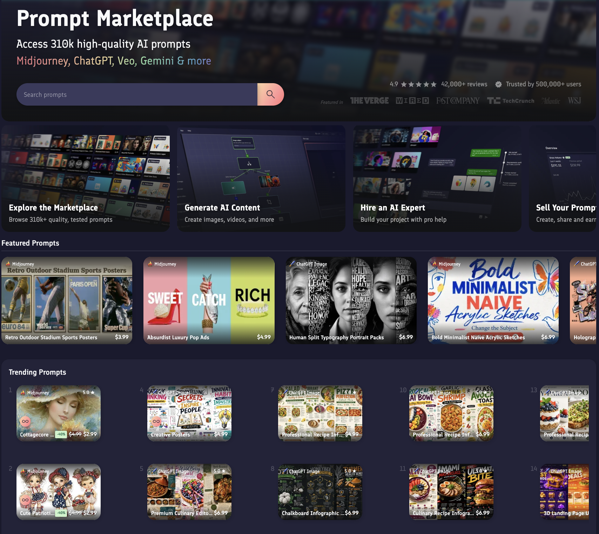

Prompt engineering
Day 2 - 9:00 AM - 9:30 AM
This page is still subject to change
1 Introduction to Prompt Engineering
- What is a prompt?
- A prompt is the input text or query that you provide to an AI model to generate a response. It can be a question, statement, or instruction.
- What is prompt engineering?
- The process of designing and optimizing prompts to provide you relevant and accurate responses for your specific needs.
2 Why is prompt engineering so important?
The only thing that stands in between you and an effective solution is the prompt you generate.
Prompt engineering is so important that there are entire jobs, courses, and websites dedicated to it. In fact, you can purchase prompt engineering services from companies.

3 Anatomy of a well-crafted prompt
Fortunately, for us science-minded folks, there is an SOP of sorts to help us craft effective prompts. A well-crafted prompt should include, at minimum, the following components:
- Task: What are you asking the AI model to do?
- Example: “Write a script that counts all A, T, C, and G characters in a FASTA file.”
- Context and Constraints: What information does the AI model need to know to complete the task? Are there any constraints or limitations that the AI model should be aware of?
- Example: “Write a script that counts all A, T, C, and G characters in a FASTA file. The script should be written in Python 3 and use the Biopython library. The file may contain Ns, which should be ignored.”
- Output Format: What format do you want the AI model to respond and/or produce?
- Example: “Write a script that counts all A, T, C, and G characters in a FASTA file. The script should be written in Python 3 and use the Biopython library. The file may contain Ns, which should be ignored. The resulting counts should be printed to standard output in the following format: A:
T: ”C: G:
- Example: “Write a script that counts all A, T, C, and G characters in a FASTA file. The script should be written in Python 3 and use the Biopython library. The file may contain Ns, which should be ignored. The resulting counts should be printed to standard output in the following format: A:
4 Language in prompting
While good prompting begins with our three building blocks, the language we use in prompting has a significant impact on the quality of the response we receive.
Direct
Specificity
Details
5 Optional, but useful pieces for prompting
- Role/Persona: When your AI model responds, do you want it to take on the role of a particular type of person? Do you want your AI model to act as a molecular biologist? a bioinformatician? a student? a peer?
- Example: “You are a bioinformatician with 10 years of experience in fungal, whole-genome analysis. Write a script that counts all A, T, C, and G characters…”
- Audience: You are the one receiving the response from the AI model. Do you want the response to be tailored to your level of expertise? Do you want it to be written in a way that is accessible to a general audience? Or do you want it to be written in a way that is accessible to a specific audience, such as a group of students or colleagues?
- Example: “I am a graduate student with very little experience in bioinformatics. Write a script that counts all A, T, C, and G characters…”
6 Optional, but useful pieces for prompting (cont.)
7 Let’s practice prompt engineering
Boot up your favorite AI model and let’s get started.